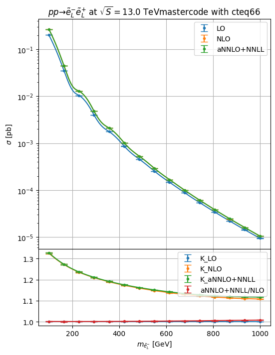
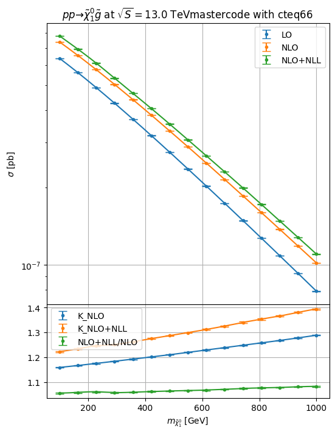

Resummino
This a simple example on using resummino through hepi.
For more advanced usages like
pdf and scale uncertainty compuations
exporting data as json
distributing scans to clusters
check the (less polished codes) in the debug or distribute folder in the source code repository
[1]:
import hepi
print(hepi.__version__)
import smpl
import numpy as np
import hepi.util as util
import matplotlib.pyplot as plt
from hepi.run import resummino as rs
# set the folder where the resummino binary can be found either in either ./{,bin,bin/build}/resummino
rs.set_path("resummino")
# By default hepi will run with nice -n5 to prevent overloading the system if more scans than cores are running
#rs.set_pre("") disables any prefixing with nice
print (rs.get_path())
0.2.9.7
~/git/resummino_releases/
aNNLO+NNLL for weakino pair, slepton pair, Z’/W’->leptons,
[2]:
%%time
params = [
"mastercode_with_gm2.in", # baseline slha file in the relative ./output folder by default unless set_output_dir was used
]
pss = [
(1000011,-1000011), # Final state particles for resummino to run
]
for pa,pb in pss:
for param in params:
# All the inputs Order, CMS in GeV, particle 1, particle 2, slha, pdf_lo, pdf_nlo,mu_f, mu_r
i = hepi.Input(hepi.Order.aNNLO_PLUS_NNLL,13000,pa,pb,param,"cteq6l1","cteq66",1., 1.)
li = [i] # li is our list of inputs that we want resummino to run
li = hepi.mass_scan([i],pa, np.linspace(100,1000,7+8)) # we scan the slepton mass from 100 to 1000 at 15 equidistant points
rs_dl = rs.run(li,skip=True) # run resummino, skipping if the result already exists.
# rs_dl is a panda table(dataframe) with all inputs and result
_,axs = hepi.init_double_plot()
# hepi has some useful plotting routines, but the results from rs_dl can easily be accessed
# Now plot the mass of PDG id pa from the results at LO ,NLO and aNNLO+NLL
hepi.mass_plot(rs_dl,["LO","NLO","aNNLO_PLUS_NNLL"],pa,axes=axs[0],tight=False)
# Plot K factors vs LO and aNNLO+NLL/NLO
hepi.mass_plot(rs_dl,["K_LO","K_NLO","K_aNNLO_PLUS_NNLL","aNNLO_PLUS_NNLL_OVER_NLO"],pa, yaxis=None, axes=axs[1],logy=False,tight=False)
# construct a title from the inputs
hepi.title(li[0],axs[0],scenario="mastercode")
/home/apn/data/de.neuwirthinformatik.Alexander/Development/git/hepi/hepi/util.py:101: UserWarning: LHAPDF python binding not installed? Make sure you set PYTHONPATH correctly (i.e. correct python version) if you want to compute PDF uncertainties.
warnings.warn(
Skipped: 15 Not skipped: 0
CPU times: user 4.96 s, sys: 103 ms, total: 5.06 s
Wall time: 5.07 s

NLO+NLL for squark/gluino+weakino
[6]:
%%time
params = [
"mastercode_with_gm2.in",
]
pss = [
(1000022,1000021),
]
for pa,pb in pss:
for param in params:
# For this demo we reduce the number of iterations to 5, but 50 is recommended, also precision of permille 0.001 is recommended
i = hepi.Input(hepi.Order.NLO_PLUS_NLL,13000,pa,pb,param,"cteq6l1","cteq66",1., 1.,precision=0.01,max_iters=5)
li = [i]
li = hepi.mass_scan([i],pa, np.linspace(100,1000,7+8))
rs_dl = rs.run(li,skip=True)
_,axs = hepi.init_double_plot()
hepi.mass_plot(rs_dl,["LO","NLO","NLO_PLUS_NLL"],pa, axes=axs[0],tight=False)
hepi.mass_plot(rs_dl,["K_NLO","K_NLO_PLUS_NLL","NLO_PLUS_NLL_OVER_NLO"],pa,yaxis=None, axes=axs[1],logy=False,tight=False)
hepi.title(li[0],axs[0],scenario="mastercode")
Skipped: 15 Not skipped: 0
CPU times: user 4.15 s, sys: 107 ms, total: 4.26 s
Wall time: 4.26 s

[ ]: